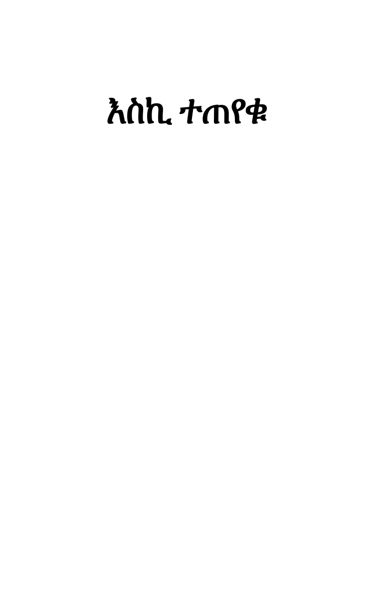

Poem
እሽከለኬንታ ወይም የእንባ ሸለቆ
eshkelekenta weyem yeenba sheleqo

እስካጊዜው ድረስ፥ እስኪሞላ ልኩ፤
አልቦ ሁኖ እስኪቀር፥ ዓለም መመለኩ፤
እመለከታለሁ፥ ሁሉን በየመልኩ።
እስካጊዜው ድረስ፥ እስከ መቃብር፤
ሲቀር ለሚቀረው፥ ለምን ልገደር፧
መጓደድ አይረባው፥ ኑሮ እሽከለኬንታ፤
ሁኖ ለሚቀረው፥ ከንቱ የውኃ ሽታ።
ሳሰላስል ሳስብ፥ ሳወጣ ሳወርድ፤
በሰው ተገዝቼ፥ በሰው ስሰደድ፤
የሌቱ ዘለሳ፥ የቀኑ ግሥገሣ፤
ተኝቼ ቢሆንም፥ ወይንም ስነሣ፤
አብሮኝ የሚተኛ፥ አብሮኝ አንጎላጅቶ፤
ሥግው ሊሆን በኔ፥ ባካላቴ ገብቶ፤
ይኸው ይታየኛል፥ በዐይኔ ሕሊና፤
የሰው የበህር ልጅ፥ ክፋት ሁሉ መና።
ከጥንት ጀምሮ፥ ፍጥረቴ ላሣር፤
ለመከራ ትካዝ፥ ደሞም ለችጋር።
ከጥንት ጀምሮ፥ ሕይወቴ አሬዎና፤
መቃኛ የሌለው፥ የጽልመት ጎዳና።
ጥራትና ውበት፥ ከሌለው መኖሬ፤
ይሻለኛል እኔ፥ ፈንታ መቃብሬ።
ቡንኝ ትቢያ እንጂ፥ ነው የኔ ገላ ፀፈር፤
ልቤ እየተረዳው፥ ይኸንን ሲኖር፤
ያለሁበት ዓለም፥ ፈጽሞ ለምኔ፧
እሽከለኬንታ ነው፥ አይረባኝም ለኔ።
የሕይወቴ ወረት፥ እንዲሁም ድላሉ፤
ኃዘን ትካዝና፥ ጥቃት ነው በሙሉ፤
ይኸ ሁሉ ሲሳይ፥ ይኸ ሁሉ አዱኛ፤
የሕይወቴ ተስፋ፥ ያካሌ መጽናኛ።
እረ ሰውስ ሲባል፥ አስጠላኝ ፈጽሞ፤
ጥሎ የሚነጉደው፥ አንጋሎና አጋድሞ።
በሰዎቹ ምክንያት፥ በሰዎቹ ተርታ፤
ጠላኋቸው እጅግ፥ ሆንሁኝ አማጎታ።
ሰው ኮሶ ብጠጣ፥ በጅጉ ደቁሼ፤
ፊትም አስቀድሜ፥ ጥቂቱን ቀምሼ፤
ገብቶ አያስቀምጠኝ፥ እንዲያው መቁረጥ ብቻ፤
ፈጽሞ አጣሁለት፥ መላ መቀነቻ።
አየ የኔ አዱኛ፥ አየ የኔ ዕድሌ፤
ታዞረኝ ጀመረ፥ ከቶ ያላመሌ።
ይህች እመቤት ዓለም፥ ባለብዙ ቤት፤
እልፍኝ ታዳራሽ፥ ማድቤት ተማጀት፤
ለኔም ሰጥታኝ ነበር፥ አሠርታ ተግታ፤
እልቅሶ ማጀትን፥ አድርጋ በተርታ።
መቃኑን ጉበኑን፥ በወግ አሳልቼ፤
መጽናናትን ቤቴን፥ ፈንታዬን ሠርቼ፤
ሣርና ቅጠሉን፥ ደርቤ ለብሼ፤
ዛፉን ተጠግቼ፥ ደንጊያ ተንተርሼ፤
በዕዝነ ልቡና፥ በመስማት አንጽሬ፤
የደኑን ጸጥታ፥ የወፉን ዝማሬ፤
ውኃም እየጠጣሁ፥ በጆቼ ጨልፌ፤
ከሰዎቹ ተራ፥ ከዘረን አልፌ፤
እስኪ እሞክራለሁ፥ ለመኖር በጤና፤
ርቄ ወጥቼ ከዚህ፥ ከሰው ዓለም ከዚህ ከንቱ ወና።
እስኪ ሰውነቴ፥ የኔ ገላ ዐፈሩ፤
እንዴት አደረገህ፥ ዓለም ቤት ያሣሩ፧
ገና ለጋ ነበርሁ፥ ከለጋም ቀንበጥ፤
የዚህ ዓለም ሰዎች፥ ያወጡኝ ከቅጥ።
የዕድሜየ መጠኑ፥ ገብቶ ቢሆን ኑሮ፤
አይጥለኝም ነበር፥ ሰው ሁል አስመርሮ።
እረ ለምን ሆነ፥ ሰው ሁሉ ሽመላ፧
አርሶ ያልዘራውን፥ ለቅሞ የሚበላ።
የቅጠሉን ሁሉ፥ ያበባውን ሽታ፤
እቀመጣለሁኝ፥ አሽትቼ በተርታ።
በብቸኝነቴ፥ ምፈጀው ዘመኔ፤
ምዑዝ ነው፥ ሐዋዝ ነው፥ ዕጹብ ነው፥ ግሩም ነው፥ ዙሮ ዙሮ ለኔ።
ንቡም ሆነ ወፉ፥ አንድነት ሲተም፤
ሕይወት ነው ለነፍሴ፥ ለልቤ ፍጹም።
ይበጃል ምዑዝ ነው፥ ይሻላል ሐዋዝ ነው ከነዚህ መኖር፤
ለተመለከተው፥ ለሚመረምር።
ሕይወታቸው ሁሉ፥ ተግባራቸው ሁሉ በመላ ጥበብ፤
ውበት የጸነሰው፥ እያሸበረቀ ፈጥኖ የሚያብብ።
ተንትኜም አየሁት፥ በሕሊና አንጽሬ፤
ሰው የሚባለውን፥ ይኸን ታላቅ አውሬ።
ላይሰማው ለሱ፥ ላይታወቀው ግብሬ፤
ላይታየው ጥቃቴ፥ ላይጠፋ ችግሬ፤
የጥቃቴ ጌታ፥ አባረረኝ ዛሬ፤
ከዚህ ጽልመት ዓለም፥ (ይኸም ዓለም ሁኖ) ኑሮው ምዝባሬ።
ደቁሼና ልሜ፥ ከቶውን አልግት፤
በጥብጬ አላጠጣ፥ ለሰው ልጅ ዕውቀት።
ይኸ የሰው ገላ፥ የጥላ አከላት፤
ይኸ የሰው ገላ፥ የሕልም አከላት፤
የቀትር ደመና፥ ሲበተን ቅጽበት፤
አቅድ የለው የመኖር፥ የህላዌ ስልት።
በሕይወቴ ውኃ ውስጥ፥ አለበት አልቅት፤
አልቅቱም ክፉ አልቅት፥ የሰው ሰውነት።
የኔኑ መከራ፥ ኃዘኔን ብሶት፤
እስኪ መዘን አርጉት፥ እስኪ ቅመሱት።
ተሰፍሮ ነበረኝ፥ (አሁንም አልጠፋ፥ መጥፋቱንም እንጃ) እህሌ ኃዘን፤
በታላቅ መሥፈርሪያ፥ በትካዝ ላዳን።
እስኪ ይከፋፈል፥ ለፍጥረት አሁን።
የልቤ ቅዘዙ፥ የልቤ ትካዙ፤
መሥፈርት መጠን የለው፥ ጉድ እንጂ አበዛዙ።
መከራ ተረግዛ፥ ተወልዶ ችግር፤
ሥቃይ ተሞሽራ፥ ሲዘፈን ባገር፤
ኃዘን ስትዘፍን፥ አታሞ ስትመታ፤
ድህነት ሲሸልል፥ እየነፋ እንቢልታ፤
ረሀብ ሲያቅራራ፥ በጣለው ሰለባ፤
ቀጠና ደረሰ፥ ድምጹ እያስተጋባ።
ቡትትም አጊጣ፥ ከድሪቶ ጋራ፤
ዝተትና ማቅም፥ ሁነው በየተራ፤
መጡ ከኔ ዘንዳ፥ አብረውኝ ሊኖሩ፤
ተስማምተው ደረሱ፥ እየተባበሩ።
የኒህን በኔ ቤት፥ መስማማት ጠይቆ፤
ፈልጎ ቦታውን፥ ገቢሩን አጥብቆ፤
ገስግሶ ደረሰ፥ ብሎ ከንበል ደፋ፤
ተፋጥኖ ጥቃትም፥ ከሰዎቹ ተራ ተሰማ በይፋ።
ቡትትና ኃዘን፥ ማቅና ችጋር፤
ድሪቶና ሥቃይ፥ ተስማምተው በፍቅር፤
ዝተት ከድህነት፥ ሥቃይ ከቀጠና፤
ረሀብ ተምንዳቤ፥ በመዋደድ ቃና፤
መከራና ጥቃት፥ በሰልፍ በተራ፤
ተጫጭተው ተስማምተው፥ እየመቱ ሤራ፤
ሠርገው ተጋቡ፥ እጅግ ተደሰቱ፤
ከዚሁ ከኔ ቤት፥ ገቡና በለቱ።
እነዚህ ወለዱ፥ ወልደውም ተባዙ፤
ይኸንን የኔን ቤት፥ ፈጽመው ሊገዙ።
ልትቧግት ብትሄድ፥ ችግር እጅግ ፈጥና፤
ማጣት ይዛ መጣች፥ ደርሳ ከጎዳና።
ኃዘንም ብትነግድ፥ ከመከራ ጋራ፤
ልቅሶ ይዛ መጣች፥ አትርፋ በመራ፤
ትካዝና ብካይ፥ በተራ በተራ።
ሥቃይ ብትቆፍር፥ ረሀብ እየዘራ፤
ቀጠና ባንድ ፊት፥ ቢያዘምር አዝመራ፤
እጦትም ሲያካብት፥ ከሰቀቀን ጋራ፤
ድሪትና ቡትት፥ ንጣትን ሲቀዱ፤
ዝተትና ማቅም፥ እየተረዳዱ፤
ምንዳቤም ፈንታዋን፥ እንጨት ስትለቅም፤
ክሳት ይዛ መጣች፥ አመረተች ፍም፤
ክሳትም ነደደች፥ መመንመንን ይዛ፤
ድህነት አንዳጁ፥ ጥቃት እጅግ ለዝዛ።
ጠግቦም እያደረ፥ እየበላ ሥጋ፤
ከኔ ጋራ ኖረ፥ ይኸ ሁሉ መንጋ።
እንዲሁም በፈንታው፥ በሽታ ሊያበላ፤
ቤቴን ወጥቶ ሄደ፥ እየመታ መላ።
ቧግቶ ወጥቶ ወርዶ፥ ከጥኋት እስከ ማታ፤
ሰውነቱ እስኪርድ፥ እጅግ እስኪፈታ፤
ከሞት ጋራ መጡ፥ አብረው እያወኩ፤
ይኸንን የኔን ቤት፥ መጠኑን ሊለኩ።
አይተው ገመቱና፥ ሁሉም ተስማምተው፤
መከረኛ ቤቴን፥ ጠባብ ነው ብለው፤
ሠሩልኝ አንጸው፥ እኒሁ ኬውነቱ፤
አዳራሽ መቃብር፥ ሚሆነኝ ለለቱ።
(እንዲሁም ያሰፊ ቤት፥ ድንገት ተገኘና)
ጥቃትና ችግር፥ ፈጥነው ተጋቡና፤
ከድህነት ጋራ፥ እኔን ፈጥነው ወልደው፤
ዳሩልኝ መከራ።
ወንጭፋ ወንጭፋ፥ ጣለችኝ ምንዳቤ፤
እንደዚህ እስክቀር፥ ተስቤ ተስቤ።
ደረቴን ሸርሽራ፥ ገብታለች ከልቤ።
እስኪ ሁሉ ይግባው፥ ይሰባው ኃዘኔ፤
ተንግዲህስ ወዲያ፥ አልገኝም እኔ።
ዕንባዬ ሲቀዘፍ፥ ኮለል ብሎ ካይኔ፤
በነበርሁበቱ፥ በመላ ዘመኔ፤
ነቅቶ እየመነጨ፥ ከምንጩ ከልቤ፤
መያዙ ቢሳነኝ፥ ከትሬ ገድቤ።
ምንኛ ይጠና፥ ይህ ዐፈር አካሌ፤
እንደዚህ ሲበላው፥ እንዲህ ሲመያስኳው ክፉ ብልባሌ።
ምንድን አፈለቀው፥ ይህን የኔን ዕንባ፧
ስሜቴን ገላዬን፥ ሽርሽሮ ደነባ።
የሰው ክፋት ሸሩ፥ ተንኮል ንዝንዝ፤
ገላን የሚያረጥበው፥ እያበሽቀጠ ልብን የሚያለዝ።
የክረምቱ ሰማይ፥ የኔ አካል ሕሊና፤
ኖረ ተሽፍኖ፥ በግፉ ደመና።
አመጣበት ጽልመት፥ የጥፋት የክፋት የተንኮል ጋዘና።
የኔማ የኔ ልብ፥ የኔ ልብ መዓልት፤
የሰው ክፉ ሥራ፥ ጽልመት ሸፍኖት፤
ወጨፎው ዕንባዬ፥ ወጀቦው ሲወርድ፤
በደመናው ፊቴ፥ መብረቁ ሲነጉድ፤
ሕይወቴ ነገለ፥ ጠፋ ተሸርሽሮ፤
ሰውም አፈሰሰኝ፥ ካለም ውስጥ አንቅሮ።
በሰው ምድጃ ነው፥ ዕንባዬ ውኃው፤
በጥቃቱ እሳት ላይ፥ ነፎ የፈላው።
እጅግም ነፈረ፥ በጣሙንም ፈላ፤
አገንትሮ ፈጀው፥ ይኸን የኔን ገላ።
ሕይወቱንም ጠላው፥ ጠላው ሰውነቴ፤
መኖሩንም አብሮ፥ ደግሞም አከላቴ፤
አመሳሶ በዝቶ፥ በየቀበሌው፤
የኔኑ ሰውነት፥ ጠበሰው ፈጀው።
እንዲህ የሚያነፍረው፥ የማንንም ዕንባ፤
የሰዎች ነገር ነው፥ ለልብ የማይሰባ።
ልቤን ሲያቃጥለው፥ አንጀቴ እያረረ፤
ሰውነቴ ጋመ፥ ሰንብቶ እያደረ።
ጥቃትም ቢበዛ፥ ሲጎላ ሲነግሥ፤
በሰው ሰውነት ላይ፥ ይታያል ሲገሥ።
ሕሊናም ሲከፈል፥ እየሆነ መንታ፤
አእምሮን አፍዝዞ፥ ያደርጋል አውታታ።
ይኸው አይደለም ወይ፥ የኃዘን ቆባው፤
የሰውነት ዕንባ፥ ፍሬ የያዘው።
ይኸ ለጋው ቀንበጥ፥ ለምለም ሰውነት፤
ያማረው አበባ፥ አዳም ለጋ ፊት፤
አመዳዩ ጥቃት፥ በጥኋት መትቶት፤
አሳርሮት ቀረ፥ ከዚያው ካለበት።
አሽን ነው አንዳች ነው፥ የሰው ልጅ ክፋት፤
ዘወትር ይፈላል፥ እንበለ መስፈርት።
ኮበሽ ደረመን ነው፥ ደግሞም አንከሊስ፤
በያዘ ጊዜና፥ ፈጥኖ የሚብስ።
ሰው ሁሉ እንደዚህ ነው፥ በኔ በዘመኔ፤
አስመርሮ ሚገል፥ የሚሰድ ምናኔ።
መጠኑ አልመጥኖኝም፥ ለኔ ለመጠኔ፤
ትክ ብዬ ባየው፥ አተኩሬ ባይኔ፤
እረ ይኸ መሬት፥ ይኸ ዓለምና እኔ።
የጥኋት ጤዛ ነኝ፥ የሌት አመዳይ፤
ተንኜ የምጠፋ፥ ስትወጣ ጸሐይ፤
የሕፃን ሕልም ነኝ፥ የቅጀት ጎዳና፤
ፈጥኜ ምጠፋ፥ ያለብኝ ሙስና።
የበጋ ጥላ ነኝ፥ የምታይ በይፋ፤
በጸሐይ የምነግሥ፥ መስዬ ማልጠፋ።
በጸሐይዋ ጥልቀት፥ የኔ የሰው ጥላ፤
ጠፍቶ ይቀራል እንጂ፥ እንዳልኖረ ሁላ።
ነገ እንደ ዛሬ አይሆን፥ ዛሬም እንደ ነገ፤
ቅጠል ሰውነቴ፥ ፈጥኖ ጠወለገ።
ዛሬ እንደ ነገ አይሆን፥ ነገም እንደ ዛሬ፤
ፈጥኖ ይመጣል ባካላቴ፥ ሕንፃ የሞት ምዝባሬ።
ደስታ ሲመጣ፥ ኃዘን ሲከተል፤
ሞት እየነደፈ፥ መቃብር ሲፈትል፤
የተሠራውን ልብስ፥ አድርጎ በውል፤
እያስተካከለ፥ ፍጡር ይለብሳል።
ተቻቻይ ነው ሁሉም፥ እየሆነ ጥንድ፤
ዓላማው ከንቱነት፥ ፈጥኖ የሚነጉድ።
መዓልትና ሕይወት፥ ሞትና ጨለማ፤
አንደኛው ያለማል፥ አንዱ ሲያደለማ፤
እየቅል እንጂ ነው፥ የሁለቱ ዓላማ።
አለላ አይደለም ወይ፥ እንዳለሉት ኑሮ፤
ቀለም አይደለም ወይ፥ እንዳየሩት ኑሮ፤
ሲያቀሉት ሚቀላ፥ ሲያጠቁሩትም ጠቁሮ።
እንደዚህ ከሆነ፥ ኑሮ ምትሉኝ፤
ዳናዬም አይሰማ፥ ዲካዬም አይገኝ፤
እኔ ካሁን በስቲያ፥ የልም ሩጫ ነኝ።
እንደ ዘላን ሁሉ፥ መላ ዘመኔን፤
ቢያዞረኝ ዕድሌ፥ ቢያስወጣኝ ከቤቴ፤
አልመረረውም፥ እስከለተ ሞቴ።
ተጠሟሮ መኖር፥ እስኪረግፍ አጥንቴ፤
ሳይለምደው አይቀርም፥ ቀንበጥ ሰውነቴ።
በዱር በበረሀው፥ በሜዳ ገደሉ፤
ደንጊያውና ዐፈሩ፥ ሣርና ቅጠሉ፤
አዕዋፍና እንስሳት፥ ፍጥረትም በሙሉ፤
ሰማዩ ባጥ ሁኖኝ፥ መሬትም ወለል፤
ስሄድ እኖራለሁ፥ እያልሁ ሊል ዘሊል፡፡
ሰው ከሚሉት አውሬ፥
እሩጬ ካመለጥሁ፥ ጠፍቼ በርሬ።
መከራም የለብኝ፥ የመከራም ጓዝ፤
ከሰው አውሬ አልፌ፥ ከቶ ብቃብዝ።
ከዚህ አውሬ በቀር፥ ክፋት ከሠራው፤
ሌላው ወዳጄ ነው፥ አይጎዳኝ ሳምነው።
ረቂቅ ግዙፉ፥ ሁሎችም በተርታ፤
የሐሤት ነጋሪት፥ የይባቤ እንቢልታ።
አየሩ ነፋሱ፥ ድደንና ብርዱ፤
ናቸው ወዳጆቼ፥ የማይላገዱ።
የክረምት ወጨፎ፥ የክረምቱ ጭፍና፤
መርተው ይወስዱኛል፥ በሕይወት ጎዳና።
ከቆረጠ ልቤ፥ መሄድ አይገደው፤
ከዚህ ከሰው አውሬ፥ ከበሸቀጠው።
መመለሱን ጠሉ፥ እንቢ ኣሉኝ አብረው፤
ልቤም የተከዘው፥ እግሬም የወጣው።
ልቤ ከጨከነ፥ አንዴ እግሬ ከወጣ፤
ይታዘብ ሕሊና፥ አቅንቼ ብመጣ።
የማይጎድል ውኃ፥ ኃዘኔ ሙላት፤
ከሰው ዓለም ሰማይ፥ በክፋት ክረምት፤
ይዞ ወረድ አለ፥ የመከራ ዝናም የኔን ሰውነት።
እንግዲህስ ወዲያ፥ እረ ሰው ለምኔ፤
የሕፃን ሕልም ነው፥ አይረባኝም ለኔ፡፡
ከኮሶ መረረ፥ የሰው ልጅ ክፋት፤
የሕይወት ዳፋ ነው፥ የኑሮ ዳፍንት፡፡
ተእንግዲህስ በስቲያ፥ ዘመድ ምን አለኝ፤
በመከራ ሽጦ፥ እያንጫረረኝ።
አየ ጉድ አየ ጉድ፥ አየ ድጉ ማለት፤
ለተቆረጠ ግንድ፥ ለደረቀ እንጨት፡፡
እንደ ገደል ውኃ፥ እንባዬ ቢፈስ፤
መጠንም ሳይኖረው፥ መሬትን ቢያለብስ፤
እንሶስላ መስሎ፥ ፊቴ የቀላው፤
የኃዘን የትካዝ፥ ትእምርቱ ነው፡፡
እንኳን ለኔ፥ ሰዉ ለተወለድሁት፤
ከላይ መጣሁ ላለው፥ እሆናለሁ ብሎ ለሰው አብነት፤
አምላኩን ሰቀለው፥ ሰው የሚባል ኣውሬ፤
የተንኮል ሾተል ነው፥ የጽነትም ጨሬ።
እኔ እንኳን በድሜዬ፥ ስንቱን አየሁት፤
ሕፃን ሽማግሌ፥ ጉብልም ባልቴት፤
እንስሳትም የቤት፥ የዱር አራዊት፤
የሰማይ ወፍ ሆነ፥ የባሕር አሞራ፤
ፍጡር እያንዳንዱ፥ ሁሉም በየተራ፤
ትምህርት ቤት ናቸው፥ ለተመለከተ፤
በዓለም ውስጥ ካለ፥ ሥጋው እስከሞተ።
ሰው ይለኛል ነፃ፥ ሰው ይለኛል ጌታ፤
ባለም ወህኒ ቤት፥ እየሆንሁ አውታታ፡፡
ደግሞ ከዚህ ሌላ፥ ባካሌ ቢያጠላ ሰው የሚባል ጥላ፤
ነፍሴ ተጨነቀች፥ አጣችለት መላ፡፡
እስኪ ተመልከቱት፥ ቆባው ሲፈነዳ፤
እስኪ ተመልከቱት፥ ሰው ሰውን ሲከዳ፤
ቆባውስ ፈንድቶ፥ ይሆናል አበባ ያውም መልካም ሽታ፤
ሰውስ ሰውን ከድቶ፧
ሰው፤ ሰው፤ ሰው፤
ምንድን ምን ነገር ነው፧
ቢጥዱት አይበስል፥ ቢፈጩት አይፈካ፤
ቢያምሱት አይታመስ፥ ቢያቦኩት ኣይቦካ፤
ሽክሽክ ኣይወድለት፥ ወይንም ፍትግ፤
አይነቀት እንቀት፥ ወይንም አይላግ፤
ምን መላ ይምጣለት፥ መላ ታጣለት፤
ለዚህ ለሰው ጥሬ፥ የሚሆንለት፡፡
ሲፈልጡት ኣይፈለጥ፥ ሲልጡት አይላጥ፤
ሲማግዱት አይነድ፥ ሲቆርጡት አይቆረጥ፤
ሲጠርቡት አይጠረብ፥ ተልጎ ኣይለዝብ፤
ለማገዶ ማይሆን፥ ለሌላም ጥበብ፤
እረ እንዴት ይሆናል፥ ለምን ይውላል፧
ይኸ የሰው እንጨት፥ ጠፍቶ ያጠፋል።
ቢንጡት አይናጥ፥ እርጎ አይሆን ወይ ቅቤ፤
እንደ ውኃ አይጠጣ፥ አይገባ ከልቤ፤
ቢያረጉት አይረጋ፥ ቢያፈሉት አይፈላ፤
ወገሚት አሬራ፥ እንገር ወይም አጓት አይሆን እንደሌላ፤
ይጠቁራል ይነጣል፥ እንዴት ይሆናል፧
ይኸ የሰው ወተት፥ ሰው ያስጨንቃል።
ቢጠጡት አያርስ፥ አይቀልጥ ቢያቀልጡት፤
ቢበሉት አይጠቅም፥ አልባ ጠመቀት፤
ቢነጠር አይጠራ፥ እሳት አይገባው፤
ለሞት ለፈውስ አይሆን፥ መዋያ የለው፤
ለጠጅ ለብርዝ አይሆን፥ ሲቀመጥ ቢኖር፤
እረ ምን ሠራልኝ፥ ይኸ የሰው ማር።
ቢዘሩት አይበቅል፥ ቢያቀኑት አይቀና፤
ቢሸጡት አያተርፍ፥ ቢያኖሩት ቀጠና፤
ባዝመራውም ወራት፥ አይውልም ላዝመራ፤
በሬ እያደከመ፥ ገበሬ አያኮራ፤
ምርቅ ነው ክርዳድ ነው፥ ይቀራል ባበባ፤
ይኸ የሰው ፍሬ፥ ቀረ በገለባ፡፡
ተፍንዱም ኣለቀም፥ አይሆን ለबुጭቅ፤
ከቶ ለማባዘት፥ ወይ ለመፈልቀቅ፤
ቢነድፉት አይነደፍ፥ አይሆን ለፈትል፤
ቢያኖሩት ጠቆረ፥ ሁኖ ባገልግል፤
ለማግ ለድር አይሆን፥ ለማላበስ ሸማ፤
የሰው ጥጥ ቅጥ አጣ፥ ሄደ እየደለማ።
ብርንዶና ጮማ፥ እየተቆረጠ፤
ቢጠብሱት ኣይጠበስ፥ እየቀላለጠ፤
ቢቀቀል አይበስል፥ ለዝልቦም አይሆን፤
አውሬ እንኳ እንዳይበላው፥ ሆነ ምናምን፤
ቢቆርጡት ደም የለው፥ እንግዲህ ገለማ፤
ይኸ የሰው ሥጋ፥ ሄደ እየደለማ።
ሲቀርቡት የራቀ፥ ሲርቁት ቀረበ፤
ሲመቱት ዝም ያለ፥ ሲተው ደበደበ፤
ሲያበሉት የሸሽ፥ ሲነሡት ነጠቀ፤
ሲችሉት ያልቻለ፥ እየነቀነቀ፤
ሲጠሉት ይወዳል፥ ሲወዱት ሚጠላ፤
ሳይጥዱት በሰለ፥ ሲጥዱት ማይፈላ።
ቢቀልቡት ከሳ፥ ቢራብ ደነደነ፤
በዘር ላይ ወፍሮ፥ በመኸር ቀጠነ።
ቢያጠጡት ተጠማ፥ ሳይጠጣም ረካ፤
እስኪ ይኸ ሁሉ፥ እንደምን ይለካ፧
ሲያነዱት ሚጠፋ፥ ፍሕሙ ተንደርክኮ፤
ሲተዉት ይነዳል፥ እንደ ፍግ ታምኮ፡፡
ቢሞሉት ጎደለ፥ ቢተዉት የሞላ፤
ቢያስሩት የሚፈታ፥ ቢያጥብቁት የላላ፤
ሲቀነበብ ወጣ፥ ሲፈታ ታሠረ፤
አረቂ እየጠጣ፥ በውኃ የሰከረ፤
በጭለማ ሚሄድ፥ በብርሃን ታውሮ፤
ከገደል የሚዘል፥ ከሜዳ ተሰብሮ።
ሳይታጠብ የነጻ፥ ቢያጥቡት የሚሸት፤
መታጀሉ ንጣት፥ መንጻቱ ግማት፤
እንዲህ አይደለም ወይ፥ የሰው ሁል ፈሊጥ፤
ሥራው የውኃ ሽታ፥ ኑሮው ግርምቢጥ።
አየሁት ለየሁት፥ ፈጽሜ ጨርሼ፤
ዕንባዬን ጠርጌ፥ ፊቴንም አብሼ፤
ተለይቼ ልሂድ፥ በምግላል ነግሼ።
ቅስሜም ተሰበረ፥ ኣእምሮዬም ጠፋ፤
ቀልቤም ቀልብ አልሆነ፥ ሰውነቴም ለፋ፤
ምን እሆናለሁኝ፥ ብቻዬን ብኖር፤
ከሰው ተለይቼ፥ በጸጥታ አገር፡፡
እስኪ ተመልከቱት፥ የዱሩን ዝሆን፤
እንዲሁም ጉሬዛን፥ ደግሞም ሽኮኮን፤
ሽግርም በቅጠል ላይ፥ ዋዥንትም ስትዘል፤
ሁሉም በየሙኑ፥ ሁሉም በየትልሙ፤
አያና ያማረ፥ ንሥሩ በሰማይ ላይ አንጃቦ ሲውል፤
ሲቀመጥ በሕይወት፥ ለብቻው ባለሙ፤
ዘመኑ እስኪፈጸም፥ እስኪረጋ ደሙ፡፡
ምቀኝነት ጥመት፥ በእንስሳት ዘንድ የለ፤
ሕይወታቸው ፍሬ፥ እጅግ የበሰለ፤
ጥቃት መገፋትም፥ ጭራሽ የለ ከቶ፤
ከንስሳት ዓለም ውስጥ፥ ወድሟለ ነኳኩቶ።
ከሰው በመኖሬ፥ ተንኮልን አወቅሁ፤
ክፋትን ጸንሼ፥ ተንኮልን ወለድሁ፡፡
ለዚሁ ከሆነ፥ የኔ መፈጠሬ፤
አስተዳድሮ መኖር፥ ሕይወቴን ላዳሬ፤
ጥንቱን ባልተፈጠርሁ፥ በሰው ማኅጸን፤
ይሻለኝ ነበረ፥ እንዲህ ከመሆን።
ሰው በሰው ሲነሣ፥ ባለም ዲብ ሲኖር፤
ዘገሩ ነገር ነው፥ ኑሮውም የጦር።
ሲዋጋ ይኖራል፥ እስከ ዕለተ ሞቱ፤
ድላሉም ሞቱ ነው፥ ሀብቱ ለሕይወቱ።
የበሸቀጠ ነው፥ እንዲህ ያለ ኑሮ፤
የአእምሮ መሸርሞጥ፥ የሕሊና እሮሮ።
መኖር ከዚህ ሥፍራ፥ ከእንዲህ ዓይነት ቦታ፤
ልቡናን በመንሣት፥ ያደርጋል አውታታ፡፡
ይሻለኛል እኔ፥ ከዚህስ መራቅ፤
ከሰው ተለይቼ፥ ቢቀርልኝ ጠንቅ፤
ሕሊናዬ ነፃ፥ ኣእምሮዬ ንቁ፥ ስሜቴ ምጡቅ።
ጥበብን ቀለቤ፥ ዕውቀትንም ስንቄ፤
በማስተዋል በውነት፥ እኒህን ጠብቄ፤
መኖር አይሻልም ወይ፥ በተፈጥሮ ቤት፤
እጅ እጅ ካለው ገምቶ፥ ከሰዎች ሥራት፤
ባህል ልማድ እድር፥ የግም መሸፈኛ፤
ሰዎች የፈጠሩት፥ ለእውነት ለሠናይት ለውበት መጋኛ።
መረረኝ ጎሽብኝ፥ ከሰው ጋር መኖሩ፤
እንደ እሾህ ቢወጋኝ፥ ሁሉም በነገሩ።
ልቤን ደም አስርቦት፥ እጅግ ደም ጎረሰ፤
ሕንፃ ሕሊናዬም፥ ሄደ እየፈረሰ፡፡
ቢታይ ቢመረመር፥ ቢታሰብ ቢወሳ፤
ሰው ያካበተልኝ፥ ብሶትና አበሳ፤
ምንም አይወስነው፥ ጥልቀት ወይ ምጥቀት፤
እስከ ዓለም ዳርቻ፥ እስከ ሰማያት፡፡
እንግዲያማ ለዚህ፥ ሰው ላሉት ነገር፤
እቡሰ ልብ ሁኖ፥ ባለም ውስጥ ሲኖር፤
ቁናውን በቁና፥ አክርማውን ቀጭቶ፤
ማሰፈር ነበረ፥ ሁሉን አስለክቶ።
የሟለጠ ነገር፥ ሞረድ አይገታው፤
ይኸ የሰው ብረት፥ ከቶ ማይተባው፤
ከቶውን ሳይተባ፥ ስለት ሳይወጣው፤
ዐፈር ፈጅ ሆነ፥ መሬቱ በላው።
መንከራተት መዞር፥ አይሰለቸኝ ከቶ፤
አካሌ ለምዶታል፥ ሁሉንም አካቶ።
ግራ ቀኙን ብዬ፥ በሕይወት ጎዳና፤
እዘልቀው የለም ወይ፥ ይኸን ያለም ጭፍና።
መዓልቱ ሲጠፋ፥ ሌቱ ተተክቶ፤
ይለወጥ ይሆን ወይ፥ ሰው ሁሉ ሰንብቶ፧
ነፋሱ ሲነፍስ፥ ደመናው ሲጓዝ፤
የጎተራው እህል፥ ሲበላው ነቀዝ፤
የሰው ልብስ ቢሆን፥ ከጥንት እስከዛሬ፤
ይኸው እዚህ ደርሷል፥ ይዞት ምዝባሬ።
ለምለም ሰው ጠውልጎ፥ እየከሸለለ፤
ቆባው ባዶ ሁኖ፥ እየጠነዘለ፤
የፍሬው ጎተራ፥ ፈርሶ ሲደረባ፤
ከንቱ ሁኖ ቀረ፥ ያለም ሰው ባበባ።
የታመመው ሲድን፥ ጤነኛውም ሙቶ፤
ያልዘሩት ሲበቅል፥ የዘሩትም ጠፍቶ፤
የዚህ ዓለም ኑሮ፥ ኑሮው ታላቅ መርዶ፤
ይካበታል ፈጥኖ፥ እንዲህ ወርዶ ወርዶ።
ኑሮዬ ኑሮአችሁ፥ መዝገበ ቃላት፤
መደምደሚያው ቃሉ፥ ሁለት ቀለም ሞት።
ያልታሰበው ሲሆን፥ ያልተተለመው፤
የታሰበው ቀርቶ፥ የተወጠነው፤
ይሆናል አይሆንም፥ ሲያዩት ይኸን ሁል፤
ውል የሌለው ነገር፥ ያወላውላል።
ሕይወት የቃል ጉዳይ፥ በጽሑፍ ያልሰፈረ፤
ይረሳ የለም ወይ፥ እያጠራጠረ።
መሞት ጥብቅ ውለታ፥ የማይዛነፍ፤
ተጥፎ የመጣ፥ ከጥንቱ በረድፍ።
ይኸ መሆኑን ሳውቅ፥ ልቤ ሲረዳው፤
ከሰው ጋር መኖሩን፥ በምን ልመኘው።
ከሰው ጋራ ብኖር፥ ሞት አይቀርልኝ፤
ብቻዬንም ብኖር፥ ሞት አይቀርልኝ፤
ኋለኛው ይሻላል፥ ለኔም ተሰባኝ።
ንጽሕን ለመጠበቅ፥ ሳይተዳደፉ፤
ብቻን መኖር ወሰው፥ በሰው ሰው ሳይጠፉ።
አለላ አይደለም ወይ፥ እንዳለሉት ኑሮ፤
ሲያቀሉት ሚቀላ፥ (ወይም ሌላ ቀለም) ሲያጠቁሩትም ጠቁሮ።
ዓላማውን አያውቅ፥ ሕይወት የሚጠፋ፤
የእሽኮኮ ጸሎት ነው፥ ሲሰሙት በይፋ።
ሕሊና ሲሰለጭ፥ ሲታክት አእምሮ፤
የሕይወት መቃኛው፥ ይሆናል እሮሮ።
እሽከለኬንታችን፥ ወይ የዕንባ ሸለቆ፤
የሰው ልጅ ሕይወቱ፥ እውነት ሠናይትን ውበትን ደብቆ።
እኒህ ተመልሰው፥ ምድረ ርስት ሲገቡ፤
እመለሳለሁኝ ያኔ ነው፥ ዕውቀቱ የሰው ልጅ ጥበቡ።
1952 ዓ. ም.
In this collection
- 01እሽከለኬንታ ወይም የእንባ ሸለቆeshkelekenta weyem yeenba sheleqo
- 02ሞት ለሞት መሞቱmot lemot memotu